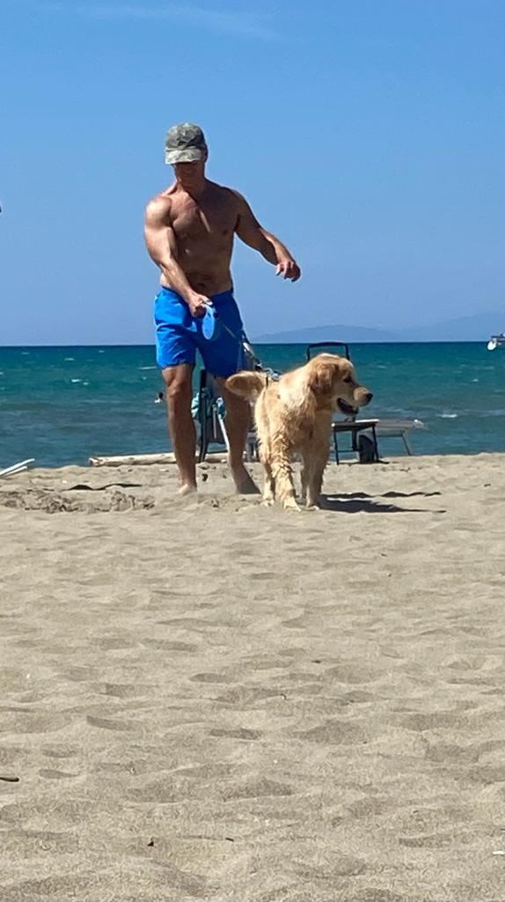

Welcome :)
Here I talk about my favorites topics, personal and professional, in no particular order. I can’t split my professional from private life. It is just one life. I’m attracted by what is intellectually stimulating, to survive the prevailing entropy. I don´t like to be pushed or pulled but my dog, Cesare, can’t care less. I disagree with the dominant culture of fake-freedom, of fake-news, of fake-values, of fake-knowledge. I can`t forget who I am, what I did and where I go. I am not able to stay on the surface, I need to dive and go deep. I am an explorer and, unfortunately, not a yes-man. From brilliant minds from the past to the Black Holes, from fermions to squat, from Gauss to R packages. With a sense of wonder …. |
 |
| I’m also considering buying a telescope to take pictures of the universe. I’m inspired by people like Gaius Iulius Caesar, Carl Friedrich Gauss, Galileo Galilei, Isaac Newton, Bernhard Riemann, Aristarch and many more. They were original thinkers, not following the crawd. |
This website is by nature work in progress as my life. It is done with R, a software originally designed to do statistics. But now R is doing more things and beyond learning AI modules or new Machine Learning algorithms I am also learning how to build a website with this technology. I built my first website with HTML but that was 25 years ago.. I am a physician and have been treating patients for more than 10 years. Medicine is an art. Qualitative Medicine. Then I discovered that my heart beats for quantitative Medicine. Good science to treat as many patients as possible. Here lies my ethics. Appropriate medicine to the appropriate patient. A value lost…. |